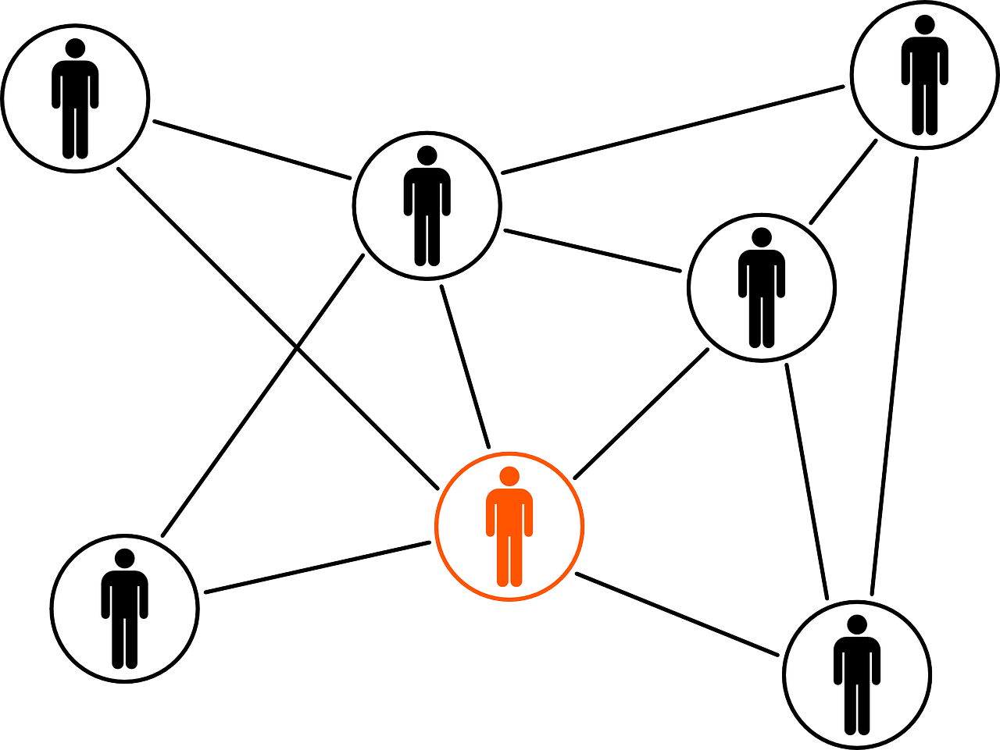

Welcome to
Entrepreneurship Development Cell - IIEST Shibpur

ABOUT
EDC was set up in the year 2009 under the AICTE initiative and is working under the guidance of the Department of Human Resources Management,
IIEST Shibpur in co-ordination with NRDC-IIEST IFC, TCGTBI and now with IIC IIESTS. It strives to create an entrepreneurial ecosystem
which provides the platform to individuals with potential for substantial business startups. This club currently has 30 enthusiastic
members with a tremendous participation of around 1000 in events.
We believe that entrepreneurship is not just about starting companies, but a pathway towards India’s socio-economic development .
Our vision is to make students and faculty ‘entrepreneurial’ in every work that they do. We hope to enable them to solve global challenges as we see students as the greatest capital and intend to nurture them, provide them with opportunities for excellence.
- Helping IIC, IIEST Shibpur to get 4 stars out of 5 in MoE's Ranking of IICs across the nation, turning our institute into a mentor institute for others.
- Bringing about a significant growth in the innovation and startup culture in the institution over past few years.
- Emninent Personalities like Gaurav Swarup and Hari Balasubramaniam whose companies feature Among Asia's top 5 have graced events hosted by EDC.
VISION
IDEATE

INNOVATE

INCUBATE
What We Do?
We make the entrepreneurial world accessible to all group of people part of the IIEST ecosystem, cater the audience from startup
enthusiast to hardcore entrepreneurs, with plethora of yearlong events and workshops through both personal and collaboration-based approach.
We help students in developing their entrepreneurship skills & create enthusiasm towards the start-up ecosystem by means of engaging activities like Guest Lectures, Panel Discussions, Business Plan/Model and Idea Pitching sessions.
EDC is a team of hardworking and goal oriented individuals, devoted to empowering students in field of entrepreneurship.